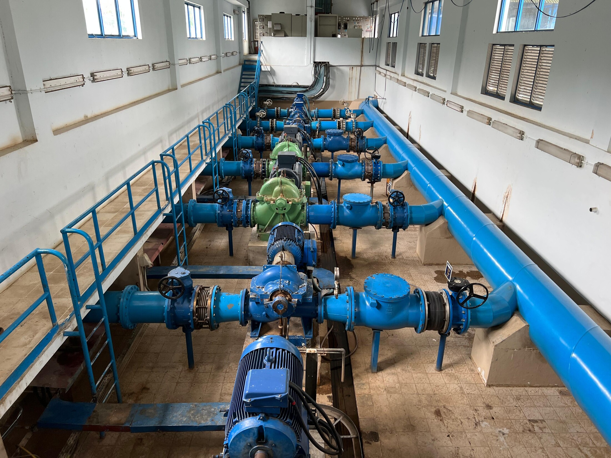
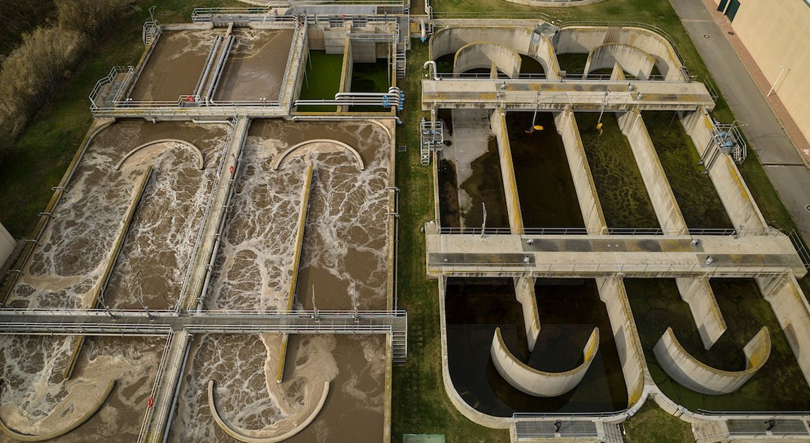

Process piping
Fabrication and installation for treatment, transfer, recirculation, chemical-support, utility-water, and related plant systems.
Water / wastewater infrastructure
We provide fabrication, process piping, equipment connections, phased tie-ins, testing, and turnover support for municipal water and wastewater treatment facilities across Colorado.

Treatment-plant execution
Treatment plant construction often takes place while water must continue to be treated, pumped, disinfected, and distributed. Piping routes, materials, corrosion exposure, bypasses, shutdowns, testing, and operator access must be planned together.
We plan fabrication and installation around process flow, equipment connections, isolation points, site access, and approved cutover windows. This produces a ready-to-install piping package with controlled testing and return to service.


Treatment infrastructure
Fabrication and installation for treatment, transfer, recirculation, chemical-support, utility-water, and related plant systems.
Connections for pumps, skids, heat exchangers, valves, meters, and packaged equipment, coordinated with nozzle locations and service access.
Phased modifications, prefabricated connection points, shutdown planning, isolation, and sequenced cutovers in operating facilities.
Spool fabrication, fit-up, welding, labeling, material tracking, and delivery planning completed before field installation.
Inspection coordination, pressure or leakage testing, flushing support, weld records, material records, and turnover packages.
Pipe supports, equipment clearances, valve access, removal paths, insulation space, and operator access planned for long-term use.
Execution priorities
Active-facility phasing and shutdown control
✓Bypass and temporary-service coordination
✓Material compatibility and corrosion resistance
✓Equipment, valve, and operator access
✓Weld, material, and test documentation
✓Maintainable routing and future replacement access
✓Bring us in early
Send us the process drawings, equipment data, material requirements, bypass needs, test criteria, site limitations, and proposed cutover schedule. We will review the package for fabrication, installation, continued service, and turnover.
Start the conversation →